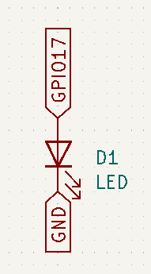
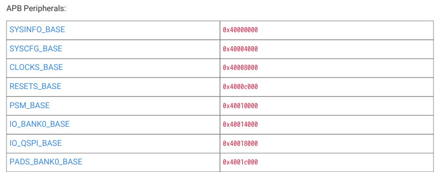
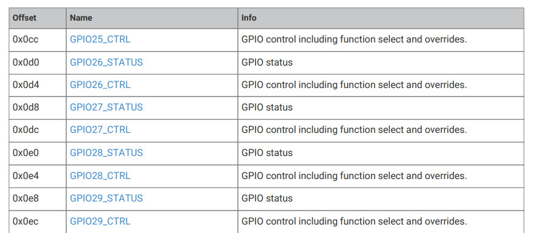
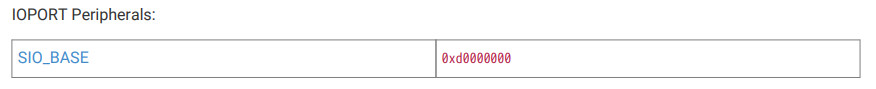
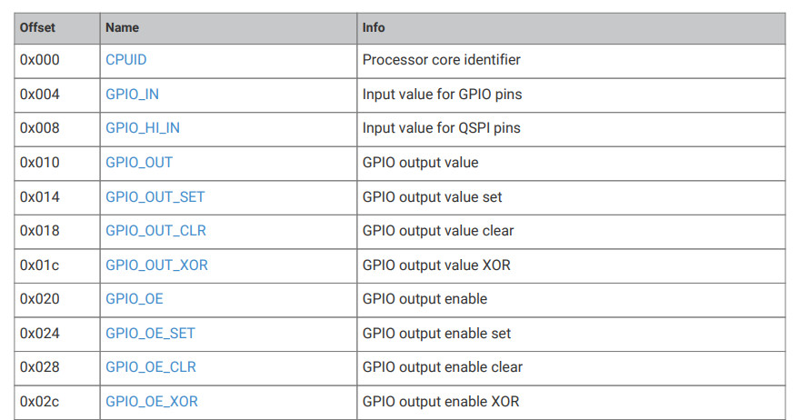
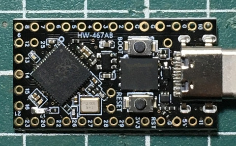
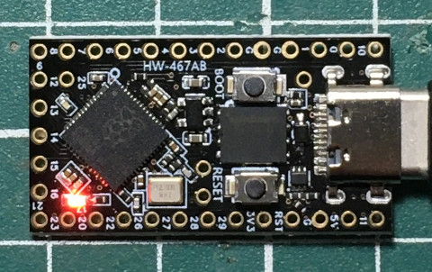

Steward
分享是一種喜悅、更是一種幸福
微處理器 - Raspberry Pi RP2040 (ProMicro) - Assembly - LED
參考資訊：
https://github.com/carlosftm/RPi-Pico-Baremetal
https://www.digikey.com/en/maker/projects/raspberry-pi-pico-and-rp2040-cc-part-1-blink-and-vs-code/7102fb8bca95452e9df6150f39ae8422
LED腳位

IO_BANK0

GPIO25_CTRL

SIO_BASE

GPIO_OE、GPIO_OUT_XOR

main.s
.equiv IO_BANK0_BASE, 0x40014000
.equiv ATOMIC_BASE, 0x4000f000
.equiv SIO_BASE, 0xd0000000
.equiv GPIO17_CTRL, 0x8c
.equiv SIO, 5
.equiv GPIO_OE, 0x20
.equiv GPIO_OUT_XOR, 0x1c
.equiv IO_BANK0, 32
.thumb
.global _start
_start:
ldr r0, =ATOMIC_BASE
ldr r1, =IO_BANK0
str r1, [r0]
ldr r0, =IO_BANK0_BASE + GPIO17_CTRL
ldr r1, =SIO
str r1, [r0]
ldr r0, =SIO_BASE
ldr r1, =(1 << 17)
str r1, [r0, #GPIO_OE]
0:
str r1, [r0, #GPIO_OUT_XOR]
ldr r2, =100000
1:
sub r2, r2, #1
cmp r2, #0
bne 1b
b 0b
.end
main.ls
MEMORY {
RAM : ORIGIN = 0x20040000, LENGTH = 32K
}
SECTIONS {
text : {
*(.text)
} > RAM
}
Makefile
all: arm-none-eabi-as -mcpu=cortex-m0plus main.s -o main.o arm-none-eabi-ld -nostdlib --entry 0x20040001 -T main.ld main.o -o main.elf arm-none-eabi-objcopy -O binary main.elf main.bin /opt/picotool/build/picotool uf2 convert main.elf main.uf2 clean: rm -f *.bin *.o *.elf *.list *.uf2
編譯
$ make
arm-none-eabi-as -mcpu=cortex-m0plus main.s -o main.o
arm-none-eabi-ld -nostdlib --entry 0x20040001 -T main.ld main.o -o main.elf
arm-none-eabi-objcopy -O binary main.elf main.bin
/opt/picotool/build/picotool uf2 convert main.elf main.uf2
按住BOOTSEL按鈕後，插入到PC，接著將main.uf2拖進隨身碟即可

